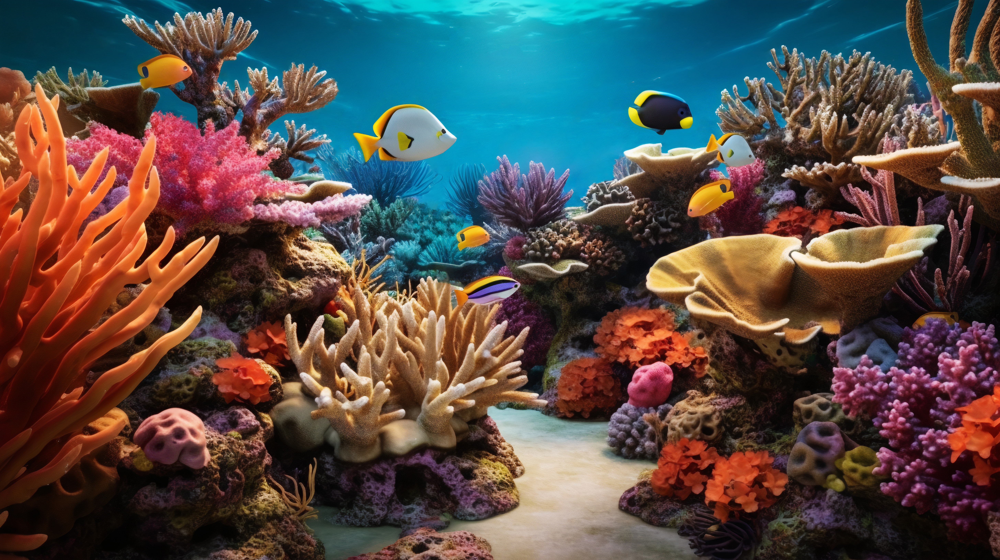
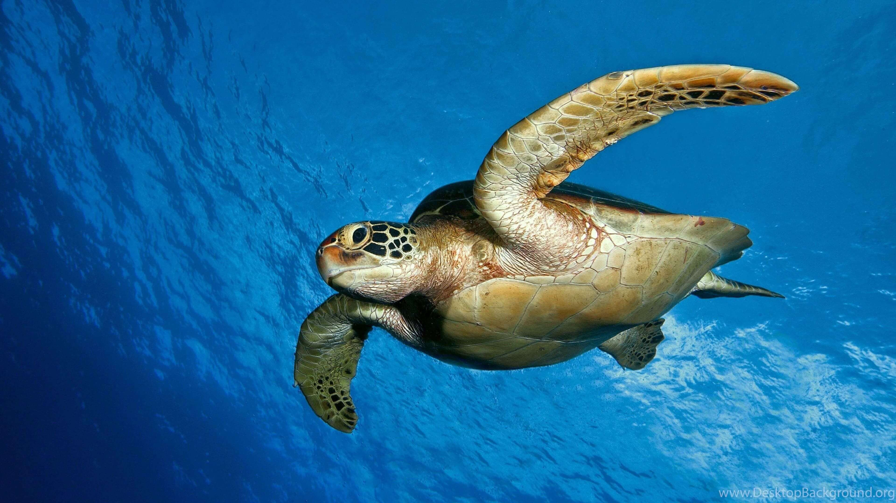
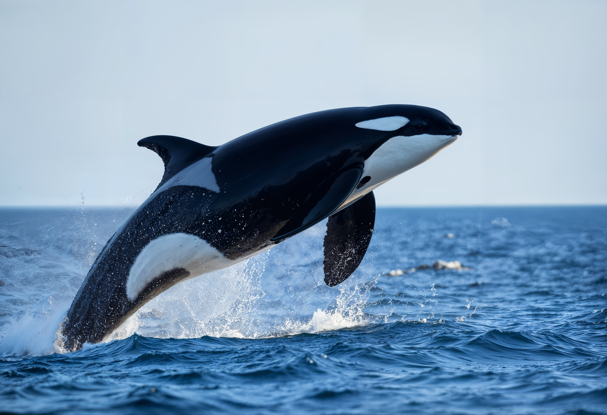

Experiências únicas que conectam você com a vida marinha de forma responsável

Explore um dos ecossistemas mais biodiversos do planeta em uma experiência de mergulho guiada por especialistas em conservação marinha. Nossos guias certificados garantem práticas de baixo impacto enquanto você descobre a beleza dos recifes de coral.

Testemunhe um dos espetáculos mais emocionantes da natureza: o ciclo reprodutivo das tartarugas marinhas. Esta experiência noturna única permite observar a desova e o nascimento dos filhotes, sempre respeitando o bem-estar dos animais.

Embarque em uma jornada inesquecível para encontrar os gigantes gentis dos oceanos. Durante a temporada de migração, as orcas visitam nossas águas para reprodução, oferecendo um espetáculo natural de tirar o fôlego.
Cada roteiro é cuidadosamente planejado para minimizar o impacto ambiental e maximizar a conservação
Grupos pequenos e práticas que respeitam o habitat natural
Conscientização sobre conservação marinha em cada experiência
Apoio às comunidades locais e projetos de conservação